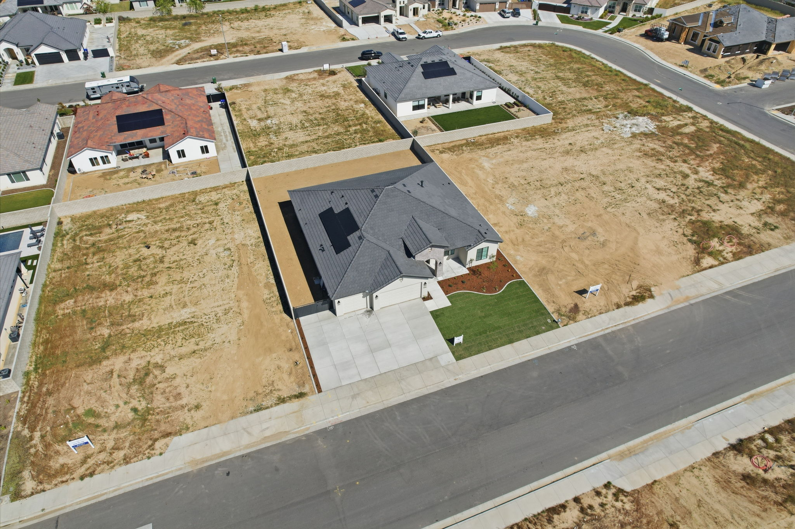
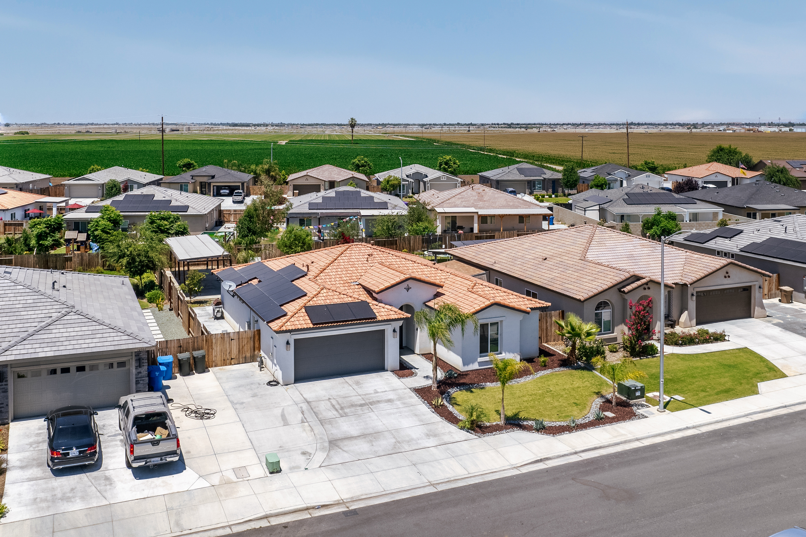
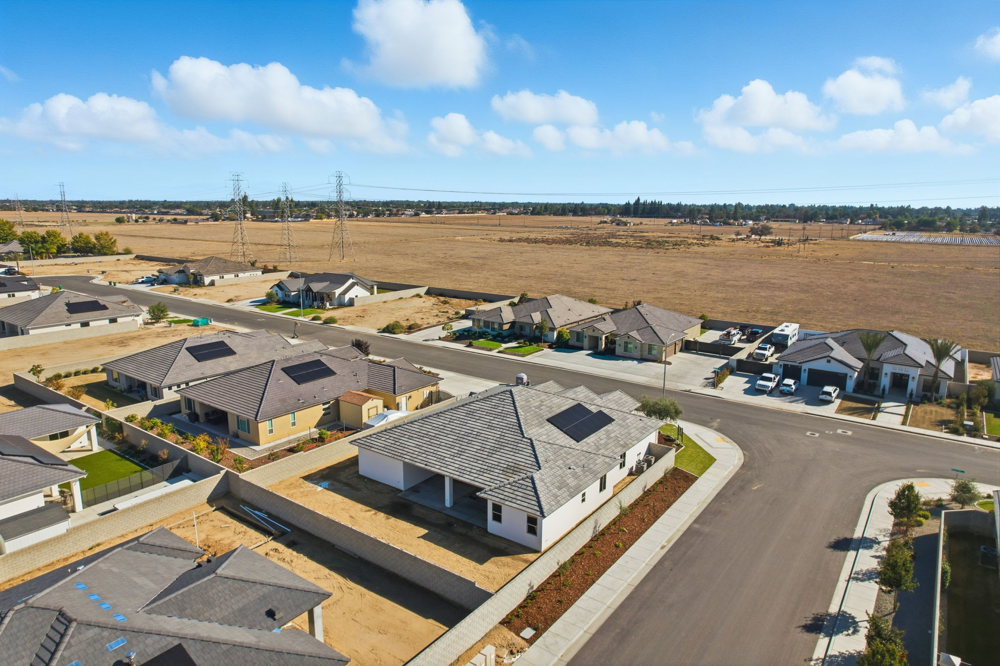

Insights on real estate photography, listing video, drone, and marketing media — written for Bakersfield agents who want stronger listings and a sharper brand.
In a market where buyers scroll through dozens of listings before deciding which ones to tour, the first photo is everything. In Bakersfield — where inventory moves fast and competition between agents is real — the quality of your listing photos directly affects how quickly a home sells and how much interest it generates in the first 48 hours.
Professional real estate photography does a few things that phone shots and amateur photos simply cannot. First, it controls light. A professional photographer uses flash techniques, HDR processing, and proper exposure blending to make interiors look bright, clean, and spacious — not dark, yellow, or cramped. Second, it controls angles. Wide-angle lenses and proper positioning show rooms in their best context, making spaces feel larger and more livable. Third, it creates consistency. Every room in a professional shoot looks intentional. Buyers feel confidence in the listing before they ever walk through the door.
In Bakersfield specifically, the market includes everything from entry-level homes in the $300K range to luxury properties in Seven Oaks, Stockdale, and the Westchester area pushing well over a million. At every price point, professional photography signals that the agent takes their marketing seriously — and that perception matters to sellers when they're choosing who to list with.
Beyond the listing itself, professional photos have a second life on social media, in email campaigns, on the agent's website, and in listing presentations. A single well-shot property becomes content that works for weeks. That's the ROI that agents who invest in media understand — and why the ones growing their business fastest in Bakersfield aren't cutting corners on listing photography.
At Indigoxphoto, we cover listings across all of Bakersfield — from quick turnaround standard packages to full media bundles with video, drone, reels, and twilight. Photos are delivered within 24 hours. Book your next listing here.



Standard real estate photography tells the story of the inside of a home. Drone photography tells the story of everything else — and for ranches, large lot properties, agricultural land, and commercial real estate in Bakersfield, that story is often the most important one.
When a buyer is considering a property with five acres, a working ranch, outbuildings, irrigation infrastructure, or a large commercial footprint, ground-level photos simply cannot communicate the full picture. A drone changes that. From the air, you can show the entire property boundary, the relationship between structures, the quality of the land, access roads, neighboring features, and the surrounding context that ground shots will never capture.
Bakersfield sits in the southern San Joaquin Valley and is surrounded by agricultural land, ranches, and large rural properties — a segment of the market that doesn't always get the media attention it deserves. For agents listing these properties, drone coverage isn't optional — it's the difference between a buyer understanding what they're looking at and a buyer moving on to something they can actually visualize.
Effective drone photography for large properties includes more than just a straight-down shot. Oblique angles that show the layout and depth of the land, low passes that reveal the quality of structures and fencing, and wide establishing shots that put the property in geographic context all work together to create a complete aerial narrative.
At Indigoxphoto, drone coverage is available as a standalone add-on or as part of a full media package. We cover all property types across Bakersfield — from standard residential with aerial add-ons to full ranch and commercial shoots. See all services or reach out to discuss your property.
Video has become a standard part of real estate marketing — but not all real estate video is the same. Agents in Bakersfield are increasingly asking for both social media reels and cinematic listing videos, and understanding the difference helps you choose what's actually going to move the needle for each property.
Social media reels are short-form vertical videos — typically 30 to 60 seconds — designed for Instagram Reels, TikTok, and Facebook. They're fast-paced, attention-grabbing, and built to stop the scroll. A strong reel leads with the most visually compelling shot of the property, moves quickly through the highlights, and ends with a clear call to action. Reels are primarily an agent branding tool. They build your audience, generate saves and shares, and get your name in front of potential sellers who aren't actively searching for a photographer yet.
Cinematic listing videos are horizontal, longer-form property films — usually 90 seconds to 2 minutes — designed for your website, Zillow, MLS video fields, email campaigns, and listing presentations. The pacing is slower and more intentional. The goal is to let a qualified buyer actually feel the layout, atmosphere, and flow of the home — not just notice it. Cinematic video builds buyer confidence and reduces the number of unqualified tours by letting serious buyers self-select before they walk through the door.
The honest answer to "which do I need?" is usually both — but for different reasons. If you're trying to grow your listing pipeline and attract sellers, reels do the heavy lifting on social. If you're trying to sell a specific property faster and at a stronger price, a cinematic video is the right tool. For luxury listings, large lots, ranches, and commercial properties, cinematic video paired with drone is the standard.
At Indigoxphoto, both are available individually or together as part of a full listing media package. See our video services or book your next shoot.
Photos delivered in 24 hours. Video in 72. Serving all of Bakersfield, Los Angeles, and Las Vegas.
Book a Shoot